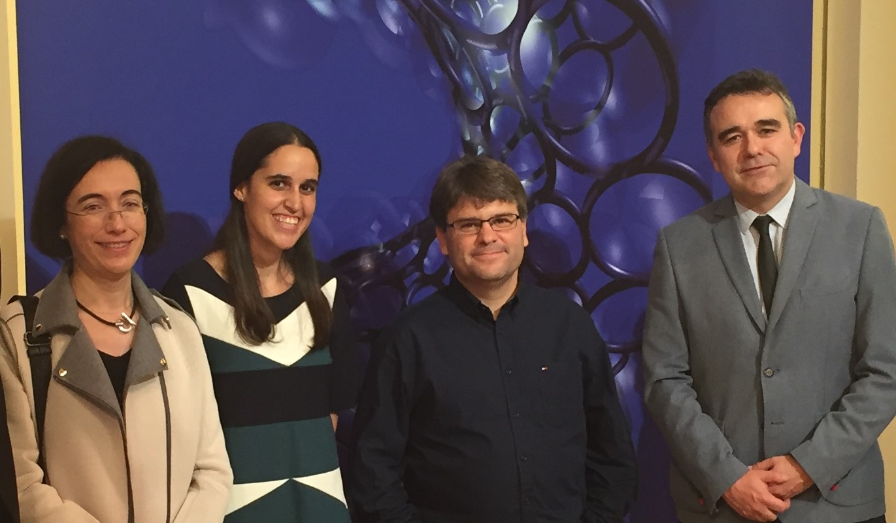

María Luisa Rapún Banzo
Universidad Politécnica de Madrid
__
He tenido el placer de mantener sendas entrevistas con los directores de tesis de los ganadores del premio SEMA Antonio Valle al joven investigador 2020 para que nuestra Sociedad pueda conocer un poco más a estos jóvenes investigadores.
Durante las mismas, he podido constatar algunas virtudes que la mayoría imaginábamos, tales como que Jezabel tiene una asombrosa capacidad para diseñar, implementar y testar códigos numéricos muy robustos para resolver problemas descritos por ecuaciones muy complicadas, o que tiene un interés innato por las aplicaciones y una increíble capacidad de adaptación y trabajo, que le han llevado a trabajar muy exitosamente con numerosos grupos en problemas punteros en Ciencias de la Atmósfera, Ingeniería Aeronáutica o Geofísica. Rafael está lleno de energía y disfruta muchísimo resolviendo problemas. Tiene una capacidad extraordinaria para identificar y resolver problemas de gran interés (¡y dificultad!) relacionados con la Mecánica de Fluidos y la Biología Matemática. Es un apasionado de la profesión y extremadamente tenaz, siendo su actitud positiva ante las dificultades una de sus mayores virtudes. Su actitud entusiasta y abierta le ha llevado a descubrir muchos problemas nuevos en su campo, en los que trabaja con gran éxito en colaboración con grupos internacionales muy prestigiosos.
He descubierto que nuestros premiados tienen intereses más allá de las Matemáticas: a Rafael le gusta jugar a la pelota vasca, aprovechó sus años en California para hacer surf, y durante su tesis se apuntó a clases de boxeo, motivo por el cual su director Rafael Orive Illera también se inició en este deporte. Sin embargo, Diego Córdoba Gazolaz (su otro director) afirma que el fútbol no es uno de los fuertes de nuestro premiado. He averiguado también que Rafael es una persona muy comprometida socialmente y que donó parte del dinero de su premio Vicent Caselles a una plataforma antidesahucios. Por otro lado, Jezabel es una apasionada de los bailes latinos, especialmente de la salsa, y cuando está de estancia fuera de España es una de las cosas que más echa de menos. También es una enamorada de Canarias, donde nació y estudió hasta comenzar su tesis. Cuando llegó a Madrid solo pensaba en regresar a su tierra, pero después, según cuenta Ana María Mancho Sánchez, directora de tesis de Jezabel, cada vez le gustó más viajar y ahora compagina largas estancias en el extranjero con su trabajo actual en la UPC. Eso sí, siempre que puede se escapa a Tenerife.

Me ha tranquilizado saber (y supongo que tranquilizará a nuestros socios más jóvenes) que nuestros premiados también tienen debilidades. Jezabel sufrió un poco ante el reto de defender su tesis en inglés. Sin embargo, se creció ante las dificultades y a día de hoy no solo se desenvuelve perfectamente en inglés, sino que también domina el francés. A Rafael hubo que animarle en alguna ocasión al principio de su tesis, cuando abordar problemas que nadie había resuelto previamente parecía un reto inalcanzable. Jezabel tuvo también algún altibajo inicialmente, cuando se percató de que obtener resultados numéricos era más costoso y complejo de lo esperado. Ana Mancho y Diego Córdoba han coincidido al comentar que a raíz de estos altibajos sus alumnos aprendieron la importancia de perseverar, de confiar en uno mismo y ganar también la batalla anímica a la que a veces uno tiene que enfrentarse durante los años de la tesis.
Si en algo coinciden los tres directores de nuestros premiados es en definir a sus doctorandos como los alumnos ideales que todo director de tesis quisiera tener. Los tres han destacado lo gratificante que ha sido trabajar con nuestros premiados también en el ámbito personal, y en lo orgullosos que se sienten de ellos. No he podido ver sus caras porque las entrevistas han sido telefónicas, pero sus voces claramente han delatado que durante todo el tiempo han estado sonriendo.
_____________________________________ ◇◇◇_____________________